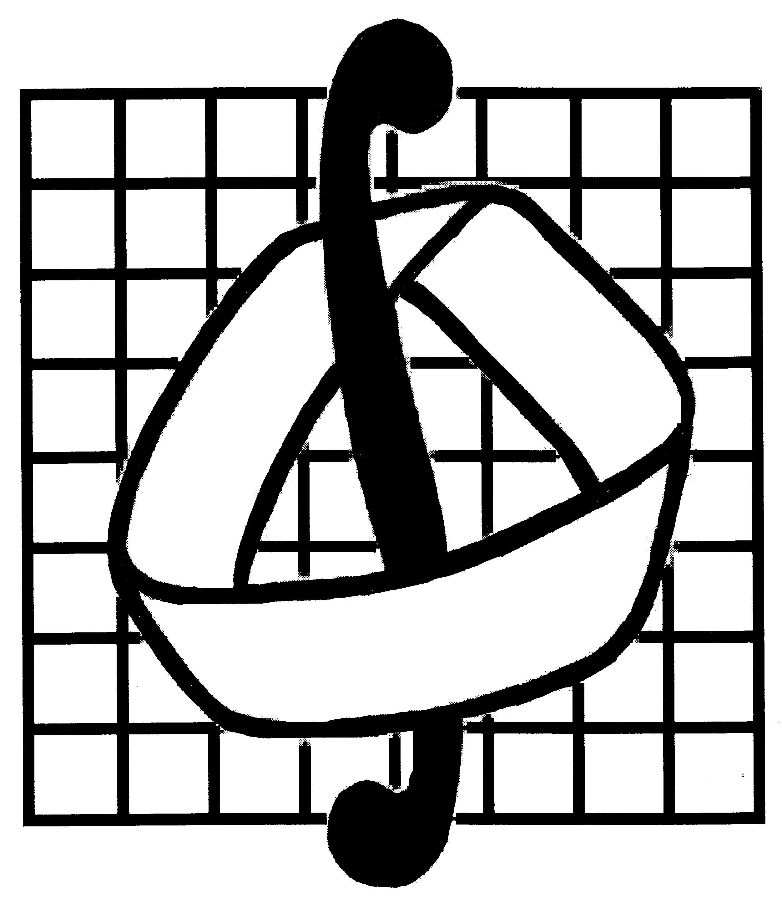

Зачем создана эта страница?
Учёба на механико-математическом факультете МГУ — большая часть моей жизни, и я хотел бы сохранить на этой странице всё, чему я смогу научиться за немалые 6 лет обучения.
Конечно, мне не удастся вместить здесь учебные материалы в полном объёме, не получится рассказать об учёбе на всём факультете. Это взгляд лишь одного студента на большой мехмат.
Надеюсь, что представленные на этом сайте материалы и записи пригодятся не только мне, но и другим студентам факультета.
Таким образом, имеем отображение \(f: MM \to P\), где \(MM\) представляет собой механико-математический факультет, а \(P\) — множество всех страниц на этом ресурсе.